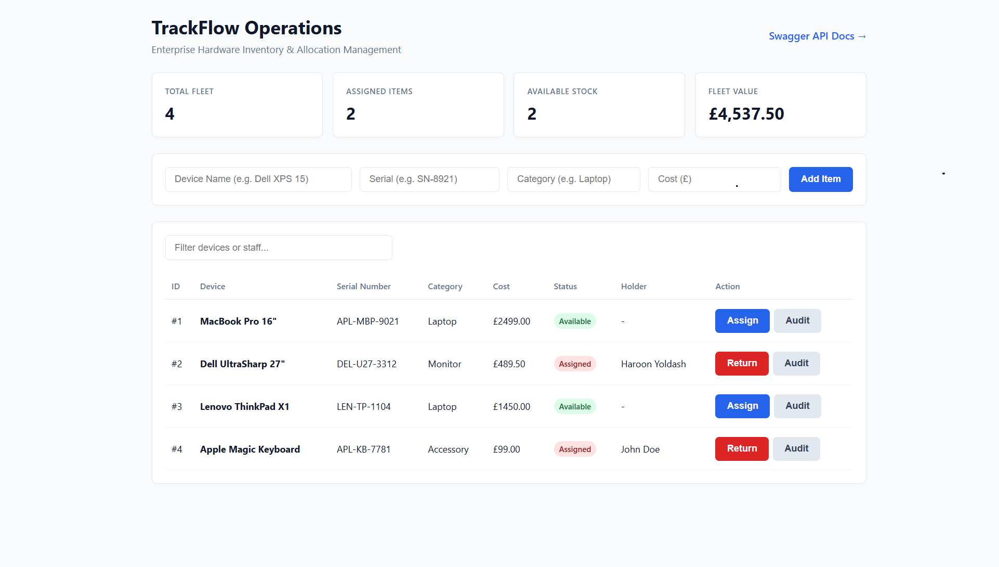

TrackFlow — Hardware Asset Tracker
Built a full-stack asset management application using C#, ASP.NET Core, Entity Framework Core, and SQLite. The system allows users to manage IT assets, track device allocations, monitor asset values, and view checkout history through an interactive dashboard. Automated testing and GitHub Actions were used to improve reliability.